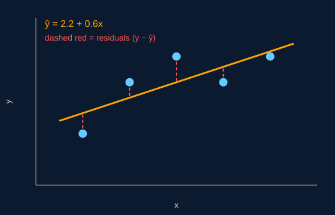

Finding the "Best" Line
Infinitely many lines could be drawn through a cloud of points, so we need a rule for picking one. The standard rule is Ordinary Least Squares (OLS): choose the intercept and slope that make the total of the squared residuals as small as possible.
SSE = Σ (yi − ŷi)2
Squaring each residual does two things: it stops positive and negative errors from cancelling each other out, and it penalizes large misses much more heavily than small ones.

The Closed-Form Solution
Using calculus (setting the derivatives of SSE to zero), the minimizing slope and intercept for simple linear regression are:
β1 = Σ(xi − x̄)(yi − ȳ) / Σ(xi − x̄)2
β0 = ȳ − β1x̄
Here x̄ and ȳ are the averages of the inputs and outputs. A useful consequence is that the fitted line always passes through the point (x̄, ȳ). For multiple regression, the same idea is written with matrices as β = (XTX)−1XTy.
Worked Example
Take five data points. The averages are x̄ = 3 and ȳ = 4.
| x | y | x − x̄ | y − ȳ | (x − x̄)(y − ȳ) | (x − x̄)2 | ŷ | Residual |
|---|---|---|---|---|---|---|---|
| 1 | 2 | −2 | −2 | 4 | 4 | 2.8 | −0.8 |
| 2 | 4 | −1 | 0 | 0 | 1 | 3.4 | 0.6 |
| 3 | 5 | 0 | 1 | 0 | 0 | 4.0 | 1.0 |
| 4 | 4 | 1 | 0 | 0 | 1 | 4.6 | −0.6 |
| 5 | 5 | 2 | 1 | 2 | 4 | 5.2 | −0.2 |
The sums are 6 and 10, so β1 = 6 / 10 = 0.6 and β0 = 4 − 0.6 × 3 = 2.2. The fitted line is ŷ = 2.2 + 0.6x. Notice that the residuals add up to zero, which is always true for an OLS line with an intercept.
Measuring the Fit: R2
The coefficient of determination, R2, tells us what share of the variation in y the line explains:
R2 = 1 − SSE / SST
SST is the total squared distance of each y from its mean. In the example, SSE = 2.4 and SST = 6, so R2 = 1 − 2.4 / 6 = 0.6. The line explains 60% of the variation; the remaining 40% is scatter around the line. An R2 of 1 would mean every point sits exactly on the line.